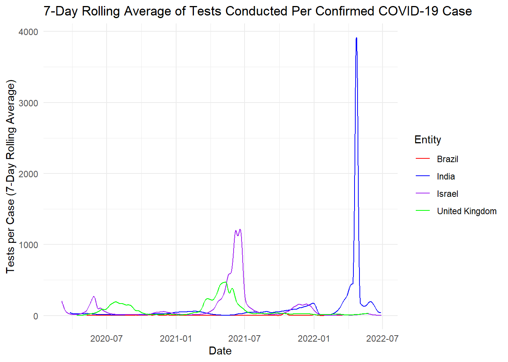

Comparing COVID-19 Testing Strategies Across Four Countries
Author
Rishab Aswani
Published
September 28, 2024
Categories
All (1)
news (1)
Problem Description
The outbreak of COVID-19 brought the points of attention about the healthcare facilities of the world to great light. Antecedent check has been one of the most efficient ways to contain the virus spread. In this case, I examine how four countries; India, Israel, the United Kingdom, and Brazil handled COVID-19 testing. More particularly, the evaluation will centre around the seven-day moving average of tests performed per confirmed COVID19 case.
Data Description
The numerical data used for this analysis have been downloaded from the “Our World in Data” dataset that contains COVID-19 data for nearly every country in the world. This dataset holds daily COVID-19 testing statistics namely:
The key variables include: - Day: The recording that indicates the day the data was registered. - Entity: Where the information was gathered Within the four countries: India, Israel, United Kingdom, Brazil. - Tests per Confirmed Case: The turn out of COVID-19 tests to each confirmed case.
The collected data in the current study underwent some data cleaning procedures to enhance their analysis. This included: - Filtering out data for only the four selected countries: India, Israel, United Kingdom and Brazil. Day reformatted as date. To make the trends more manageable, both the tests and the confirmed cases are averaged for a 7-day rolling rate.
# Loading necessary librarieslibrary(tidyverse)
── Attaching core tidyverse packages ──────────────────────── tidyverse 2.0.0 ──
✔ dplyr 1.1.4 ✔ readr 2.1.5
✔ forcats 1.0.0 ✔ stringr 1.5.1
✔ ggplot2 3.5.0 ✔ tibble 3.2.1
✔ lubridate 1.9.3 ✔ tidyr 1.3.1
✔ purrr 1.0.2
── Conflicts ────────────────────────────────────────── tidyverse_conflicts() ──
✖ dplyr::filter() masks stats::filter()
✖ dplyr::lag() masks stats::lag()
ℹ Use the conflicted package (<http://conflicted.r-lib.org/>) to force all conflicts to become errors
library(zoo)
Attaching package: 'zoo'
The following objects are masked from 'package:base':
as.Date, as.Date.numeric
# Loading the datadata <-read.csv("C:/Users/risha/Downloads/covid (1).csv")# Filtering the data for selected countriesselected_countries <-c("India", "United Kingdom", "Brazil", "Israel")filtered_data <- data %>%filter(Entity %in% selected_countries)# Converting 'Day' to Date typefiltered_data$Day <-as.Date(filtered_data$Day)# Calculating 7-day rolling average with the correct column namefiltered_data <- filtered_data %>%group_by(Entity) %>%arrange(Day) %>%mutate(Rolling_Avg =rollmean(Daily.COVID.19.tests.per.new.confirmed.case, k =7, fill =NA, align ="right"))
Analysis
The analysis identified that the four nations have different testing approaches. Israel had the highest testing per case at mid 2021 while Brazil had the lowest testing ratio throughout the period. The United Kingdom however kept high testing throughout especially during the strict lockdown periods while India’s positivity was noticed during the Omicron wave at the beginning of the year 2022.
# Creating the plotggplot(filtered_data, aes(x = Day, y = Rolling_Avg, color = Entity)) +geom_line() +labs(title ="7-Day Rolling Average of Tests Conducted Per Confirmed COVID-19 Case",x ="Date",y ="Tests per Case (7-Day Rolling Average)") +theme_minimal() +scale_color_manual(values =c("India"="blue", "United Kingdom"="green", "Brazil"="red", "Israel"="purple"))
Warning: Removed 24 rows containing missing values or values outside the scale range
(`geom_line()`).

# Saving the plotggsave("figure_1.png", width =10, height =6)
Warning: Removed 24 rows containing missing values or values outside the scale range
(`geom_line()`).
Figure 1: 7-day Rolling Average of Tests Per Confirmed COVID-19 Case across Four Countries
# Creating a summary table with the latest rolling average for each countrysummary_table <- filtered_data %>%group_by(Entity) %>%filter(!is.na(Rolling_Avg)) %>%summarise(Latest_Date =max(Day),Latest_Rolling_Avg = Rolling_Avg[which.max(Day)] )# Display the tablesummary_table
# A tibble: 4 × 3
Entity Latest_Date Latest_Rolling_Avg
<chr> <date> <dbl>
1 Brazil 2022-03-17 2.36
2 India 2022-06-27 38.9
3 Israel 2022-06-28 3.26
4 United Kingdom 2022-05-25 31.7
Rolling Average Summary Table
The table shows the up-to-date 7-day rolling average of tests carried out per confirmed COVID-19 case in the countries of concern.
Conclusion
The case successfully shows how various testing approaches impacted the development of the pandemic in various nations. There is also the necessity for high levels of testing because that is the key in preventing the spread of the virus since many people often have no symptoms. Therefore, the evidence indicates that international locations with higher incidences of testing especially those in Europe like Israel and United Kingdom were more capable of handling COVID19. However, countries with fewer tests, such as Brazil, might face more difficulties in containing the outbreak, revealing what may be the biggest asset in containing the virus – testing.